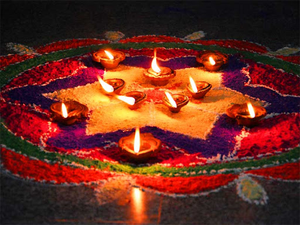
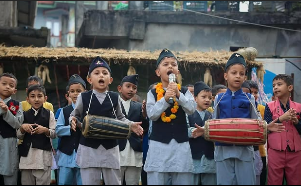
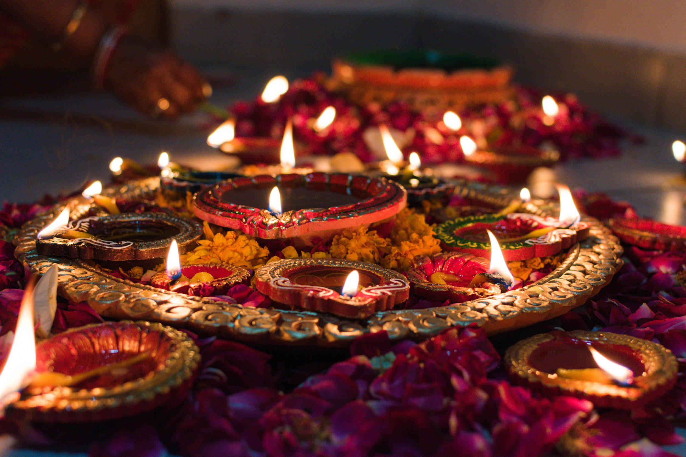

Tihar Festival
Also known as Deepawali or the Festival of Lights, Tihar is celebrated for five days with lights, colors, and prayers to different deities. Houses glow with oil lamps, candles, and electric lights.

The 5 Days of Tihar
Each day of Tihar is dedicated to worshipping different deities: crows, dogs, cows, oxen, and brothers. Houses are decorated with oil lamps, candles, and colorful rangoli patterns. The festival illuminates homes and hearts, creating a magical atmosphere throughout Nepal.
Key Days of Tihar
Day 1: Kaag Tihar (काग तिहार) - Crow Worship
The festival begins by honoring crows, the messengers of death. People offer food to crows on their rooftops, seeking to avert grief and death in their homes. Crows are believed to bring news from the realm of the dead and are respected as divine messengers.
Day 2: Kukur Tihar (कà¥à¤•ुर तिहार) - Dog Worship
Dogs are worshipped as loyal guardians and messengers of Yama (the god of death). They're adorned with flower garlands, tika, and offered special treats. This day recognizes the loyal companionship and protective nature of dogs throughout human history.
Day 3: Gai Tihar & Laxmi Puja (गाई तिहार र लकà¥à¤·à¥à¤®à¥€ पूजा)
Morning is dedicated to cows, symbols of wealth and maternal figures. Evening features Laxmi Puja, when homes are cleaned and illuminated with oil lamps to welcome Goddess Laxmi, the deity of wealth and prosperity. This is considered the most important night of Tihar.
Day 4: Govardhan Puja & Mha Puja (गोवर्धन पूजा र म्ह: पूजा)
For many Hindus, this day involves worshipping oxen. In the Newar community, it's also New Year's Day featuring Mha Puja (self-worship), a ritual purifying and blessing one's body and soul for the coming year. A special mandala is created for each family member during this ceremony.
Day 5: Bhai Tika (à¤à¤¾à¤ˆ टीका)
The final day celebrates the sacred bond between brothers and sisters. Sisters apply colorful tika to their brothers' foreheads, pray for their long life, and offer gifts. Brothers give gifts and promise protection in return. This ritual strengthens family bonds and honors sibling relationships.
Tihar Activities & Traditions

Rangoli (Aipan)
Beautiful designs made with colored rice, flour, sand, or flower petals decorate entrances to welcome the goddess Laxmi. These intricate patterns symbolize prosperity and spiritual connection, featuring geometric designs, flowers, and auspicious symbols.

Deusi Bhailo
Groups go door-to-door singing traditional Deusi and Bhailo songs, offering blessings to households in exchange for money, food, or treats. These cultural performances bring communities together and spread joy throughout neighborhoods.

Lighting Diyo
Oil lamps (diyo) illuminate houses, creating a magical atmosphere across neighborhoods and symbolically guiding Goddess Laxmi to blessed homes. The warm glow of these lamps transforms cities and villages into enchanting displays of light and hope.